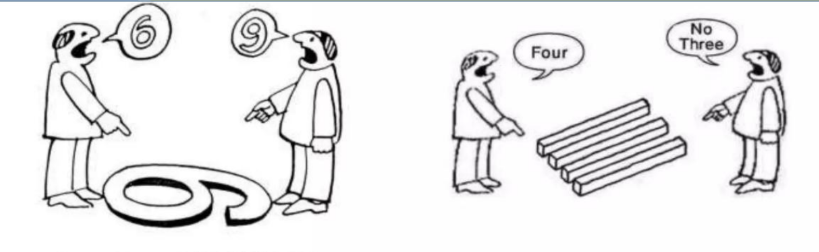
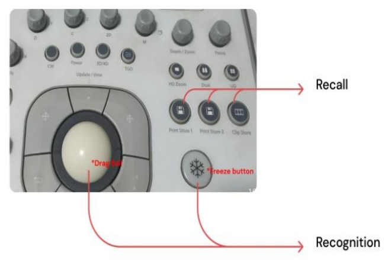
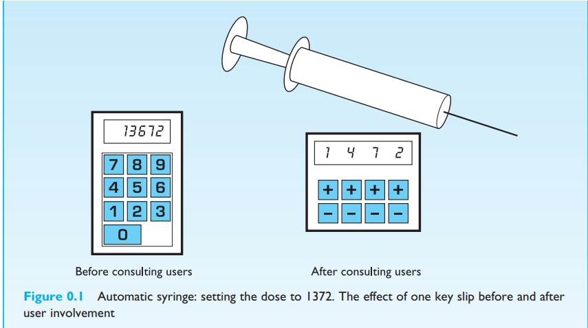
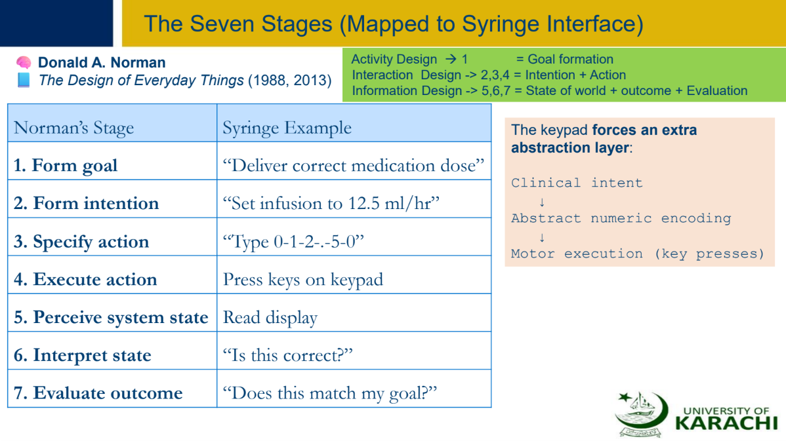

Communication Modes/Language/interaction
There are four basic levels of Communication modes which includes Basic, Intermediate, Advanced and Expert. It
involves Reading, writing, speaking, and
listening skills. Communication modes are important in HCI as they help in effective interaction between humans
and computers. There are types of
interaction that occur which includes:
- Human-to-Human interaction
- Human-to-Computer interaction
- Human-to-Machine(CLI)
- Human-to-UI
1. Human-to-Human interaction occurs in our daily life where we interact with other humanbeings through language as
our our communication medium.
2. Human-to-Computer interactions occur while we work on our computer or laptops interacting with Operating System
of our PC and many other softwares and sites.
3. Human-to-Machine(CLI) interactions occur while we use our PCs thorugh Command line interface like Command Prompt,
PowerShell, DOSBOX, and BASH.
4. Human-to-UI interaction occur while we use any kkind of application whether it is on Computer or your mobile
screens.
(Above material is taken from lecture)
ADOBE PHOTOSHOP VS ADOBE ILLUSTRATOR:
Adobe Photoshop and Illustrator both work with images, but they are very different applications. The main
differences between Photoshop and Illustrator are the
types of files each program works with and whether you’re editing graphics or photos.lustrator is a graphic
design application. Graphic designers use to create
vector graphics. Vector images and graphics are made of points, lines, shapes, and curves based on mathematical
formulas rather than a set amount of pixels.
Photoshop is the industry-standard photo editing software, and the go-to application for everything from small
retouching changes to mind-bending photo art.
Photoshop is where editors crop photos, adjust photo composition, correct lighting, and make any subject
imaginable look its absolute best.
(Photoshop vs
Illustrator)
Congnitive Psychology(The Science of How we Think):
Congnitive Psychology tells us about how a human precieve the world around them,how they store, retrieve
information, and how they physically manipulate objects.
Attention selects what you should focus on and preception is process of assigning meaning to information based
on past experiences (e.g. For suppose you watch a red light
on traffic signal and you STOP!). The cognitive process contains all mental activities that a human being uses
to learn and decide what to do next. the cognitive process
includes Sensation, Attention, Preception, Learning, memory, forgetting, thinking, problem Solving, Reasoning
and Decision making. Each human has different way of thinking.
the picture below clearly demonstrates how a human thinks.
(Source ~Week_1_HCI_CG.pdf Slide-30)

Don Norman's Design Principles:
Norman says that interacting with anything (like a door, a website, or an app) is a process that happens in two
parts: Doing and Checking.
Doing Phase(Execution):
- Set a Goal.
- Plan the action
- Specify the action
- Perform the action
Checking Phase(Evaluation):
- Perceive system response
- Interpret what happened
- Compare result with goal
Norman talks about the two problems that can makes interaction more frustrating for users:
The Two Gulfs:
- Gulf of Execution:
-
This is the gap between your goal and figuring out how to do it. For example, if you don’t know where the
"submit" button is on a website, it’s hard to complete your goal.
Fix: Make it clear how to do things. For example, show buttons with clear labels or instructions (like a
“push” sign on a door).
- Gulf of Evaluation:
-
This is the gap between what you did and understanding if it worked. For example, if you press a button but
nothing happens, you’re left wondering if it worked.
Fix: Give feedback right away, like showing a progress bar or a message that says, “Action completed
successfully.”
(Source ~Week_2_HCI.pdf Slide-25)
Recognition Vs Recall in UI Design
These are two key memory concepts in HCI from Norman’s Design of Everyday Things:
- Recognition
- Recall
- Recognition:
-
Recognition is when you see something and realize you’ve seen it before. It's easier for your brain because
you're just matching it to something you already know.So the design
of UI in such a way that makes things obvious and easy to recognize, so that people dont have to remember
them.Recognition relies on the user's capability to acknowledge familiar options
or elements within the interface.
Example: When you see a button or an icon on your phone, and you recognize it, like a "play" button for
music.
- Recall:
-
Recall is when you have to remember something without any clues. This is harder and takes more mental
effort. The Designer while making UI should
try to avoid situations where people have to remember too much, as it’s more likely they’ll make
mistakes.Recall in user interfaces denotes the user's capability to retrieve specific
information or perform a task from memory autonomously, without external assistance or cues. It encompasses
the process of summoning previously acquired knowledge or actions and
applying them to the ongoing context within the interface.
Example: Trying to remember a password or typing a complex command into a computer.
In short, make things simple, clear, and easy to follow, so users don’t have to work too hard or guess if they’re
doing the right thing!
(Source ~Week_1_HCI_CG.pdf Slide-41)

Automatic Syringe (Fig 0.1):

Example Explained (Fig 0.1)
An example is present of an Automatic Syringe on pg.8(Fig 0.1) of book where it shows how poor interface design can
cause dangerous errors, and how user involvement + better design fixes
the problem. The old design shows how the values are being entered through numeric key (13672) but the dose that was
meant to be entered was (1472). It clearly shows there was no way of going
back and the dose that was entered was 10x higher. On the right hand after consulting there is Improved design of
Automatic Syringe where each digit had its own (+) and (-) buttons through which
we could adjust the dose carefully and seperately. This happened because the designer interacted with real users who
were going to use that device. This shows that user involment improves useabilty
and safety, Poor Ui can cause real-world consequences, iterative design reduces error and participatory design leads
to better system.
(Source ~Week_2_HCI.pdf Slide-24)
Seven Stages mapped to Syringe Interface:
